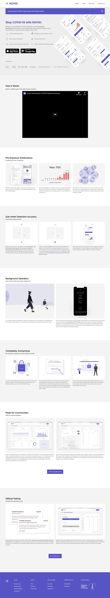
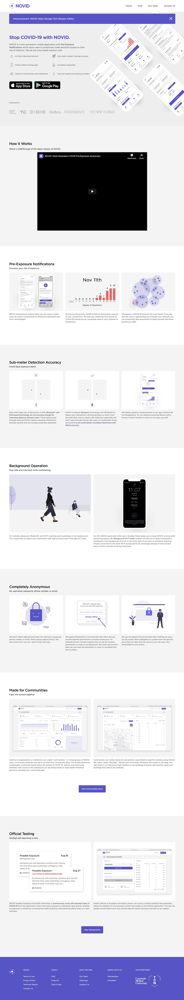
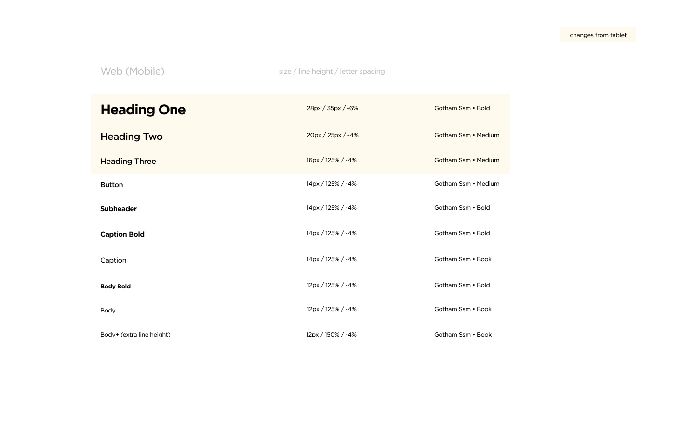
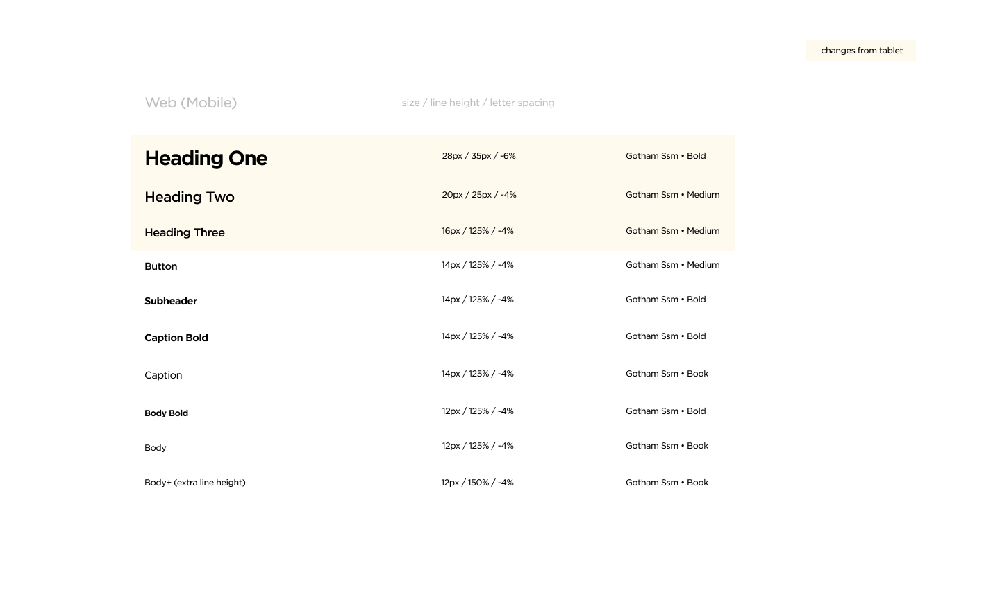
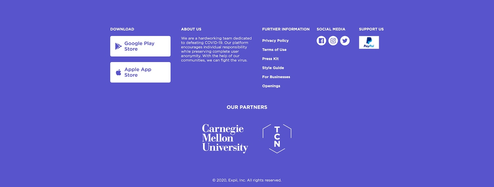
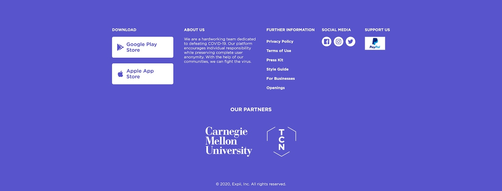
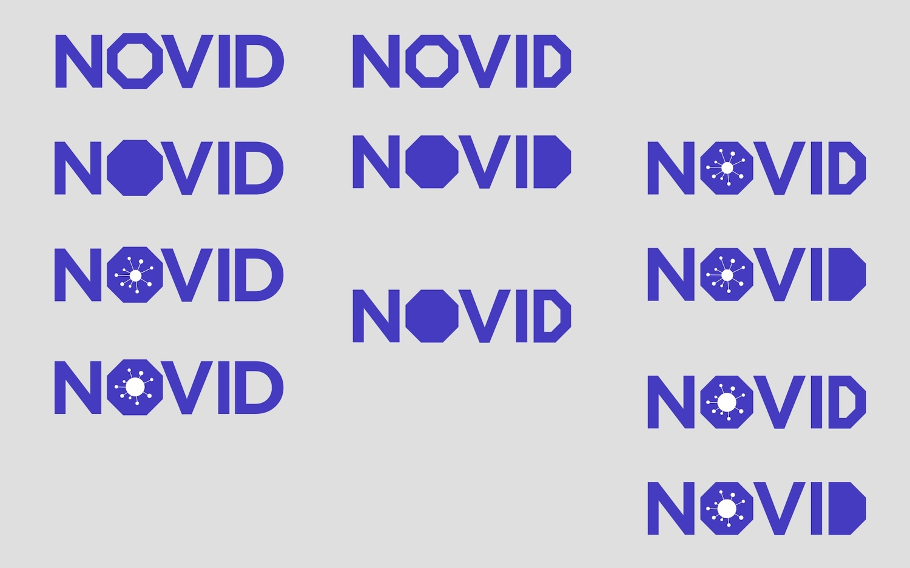
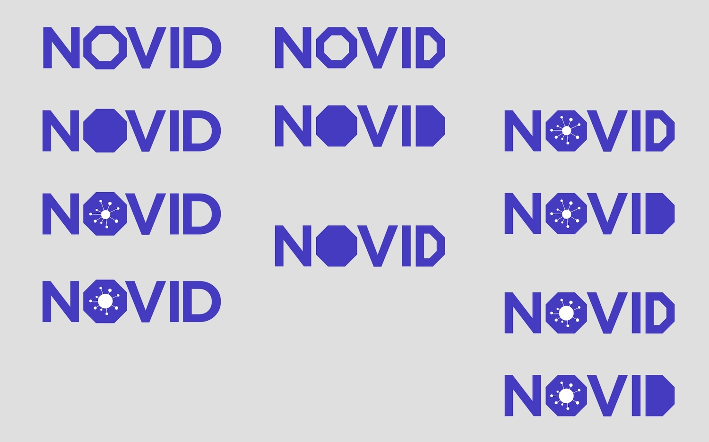
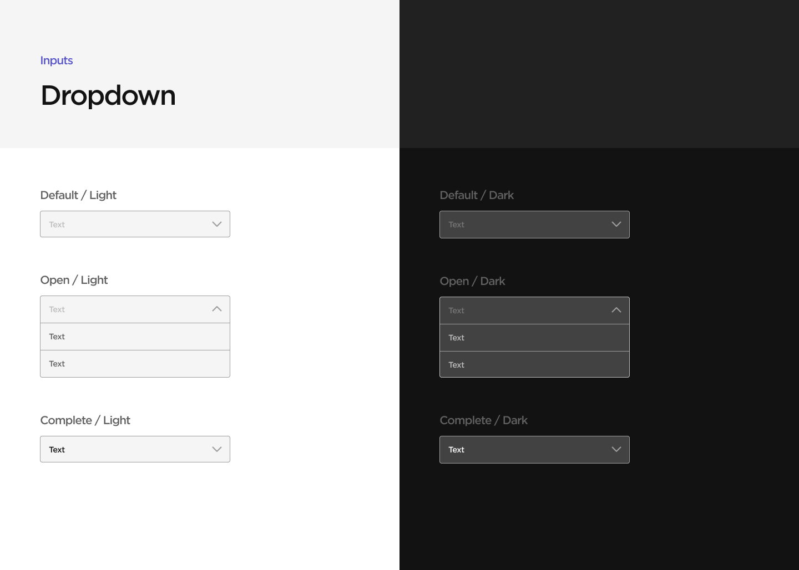
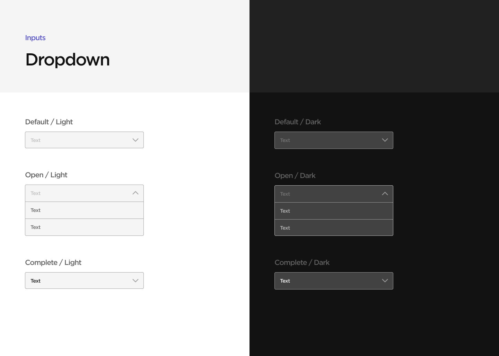

Problem
Because NOVID's visual language is inconsistent, it feels unpolished.
I joined NOVID just months after it was first established, as the third designer on the team. At the time, most of the team's existing designs were quick and scrappy, fitting for an early stage startup. However, what this resulted in was inconsistency in our design language, and as a consequence, hard-coded styles and a lack of structure for our engineers. Additionally, the team wanted to address accessibility concerns and explore features like dark mode.
Solution
A new cross-platform design system with accessibility in mind.
We established brand colors, a responsive type system, spacing and layout, an updated icon set, and design components for buttons, inputs, and modals. These were published as Figma components and libraries, including specs and redlines for our engineers, who translated them into components in storybook. We also met WCAG AA standards on our site and app and added a dark mode.
Old


New
 

Process
Type
Since type was the area that had the most inconsistency, I started off by creating a new type system that would work across both the app and website, with responsive breakpoints on web. I tested the system by viewing it through different devices and using Figma Mirror, as well as asking other coworkers for feedback ("hey, does this body text feel too small for you?").
 


Website
Using the new type system and the pre-existing system for spacing and padding (based on a 4px grid), I retouched every piece of the website, focusing on hierarchy and clarity.
Old
 

New


Branding
The NOVID logo's wordmark didn't match the new type system, and we needed a workmark that would allow for sub-brands, so I explored ways to update our wordmark to look cleaner and more consistent. With the CEO's ok, I also took the chance to explore alternate logomark options. In the end, the design team and the CEO agreed that it would be best to avoid drastic changes and instead subtly modify the existing logo.
Exploration
 



Old

New


Colors
Moving on from the website, I started tackling the design system for the app. I started by developing a color system, referencing pre-existing brand colors and using the material design system. Once the base colors were established, I defined colors for text on backgrounds, ensuring that all type met at least WCAG AA standards for contrast.


Iconography
I also re-illustrated many of our existing icons to create a consistent icon set. The team had been considering using an open source icon set like Feather Icons, but we decided against it; we decided to prioritize customization over convenience.
Components
Further fleshing out the design system, I defined states for all buttons and inputs for both light and dark mode. This was unexpectedly difficult, since I had to follow the color system and also keep accessibility guidelines in mind. During this process, I learned some interesting details about accessibility standards (for example, disabled states don't need to meet as high of a contrast standard). After defining the colors, I also created Figma components for each element.


 

Outlier UI
Before being able to fully update the app with the design system, I had to address some cards and flows that didn't fit with or follow the new standards; for example, the exposures cards and self-reporting flow.
Old


New


Handoff & Implementation
With type, spacing, and components established, I defined rules for spacing for all pages and sections, establishing a modular layout. I worked with the engineers to roll out all of the changes, including adding dark mode as a feature. This included multiple rounds of QA, both in storybook and in the app.


Learnings
Design systems are intricate, but rewarding.
This was my first foray into design systems and looking back, though it was a bit clumsy, it definitely gave me a good framework to reference for future design systems work. It's funny how a lot of the problems we tried to solve (for example, using master components or not, creating variations of components, and prototyping interactiveness and microinteractions) are now addressed by new Figma features like variants and interactive components. That being said, I feel like I learned a lot by having to make my own hackneyed solutions to create structure before those features were available.
It's important to keep engineers in the loop.
I also learned a lot through working directly with engineers and QAing through storybook. Overall, it was very gratifying seeing my work come to life in code and then roll out through both the website and the app.